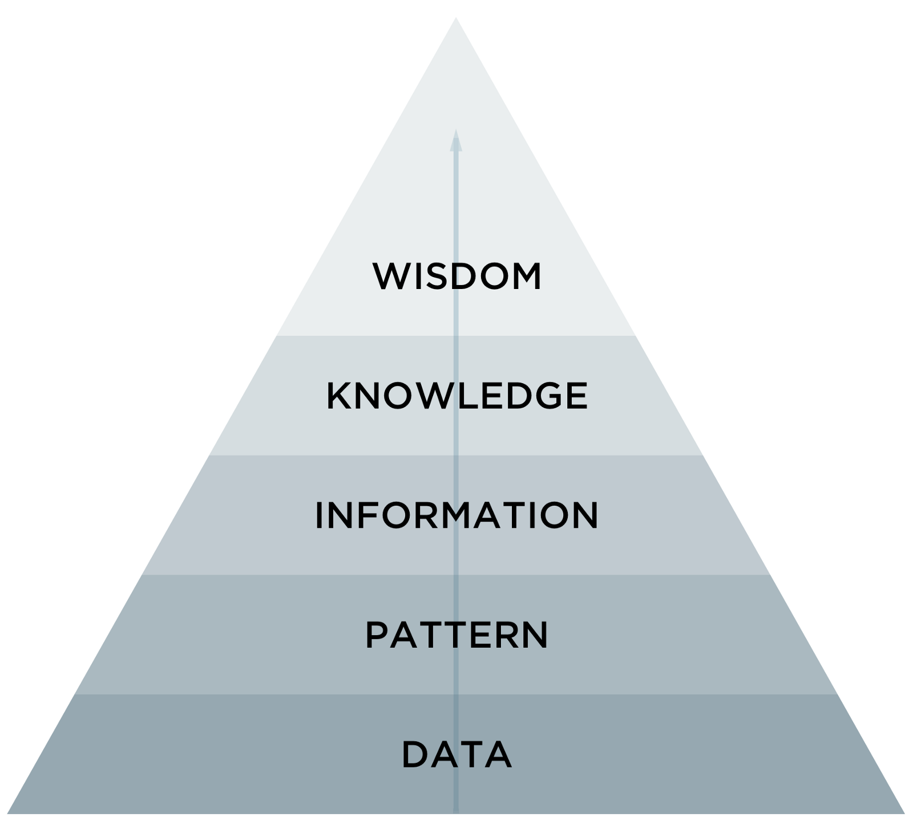
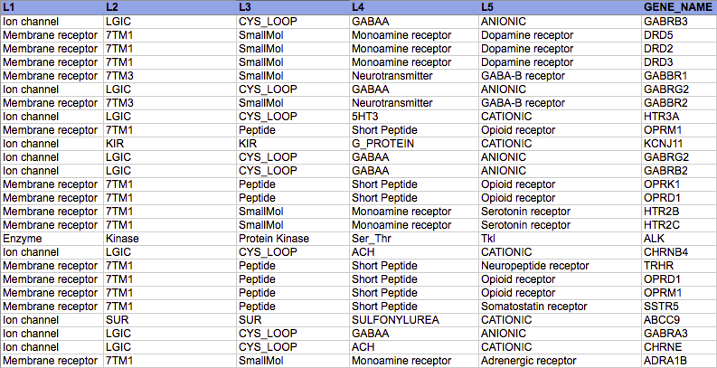
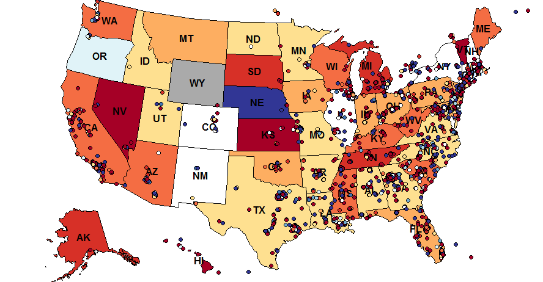
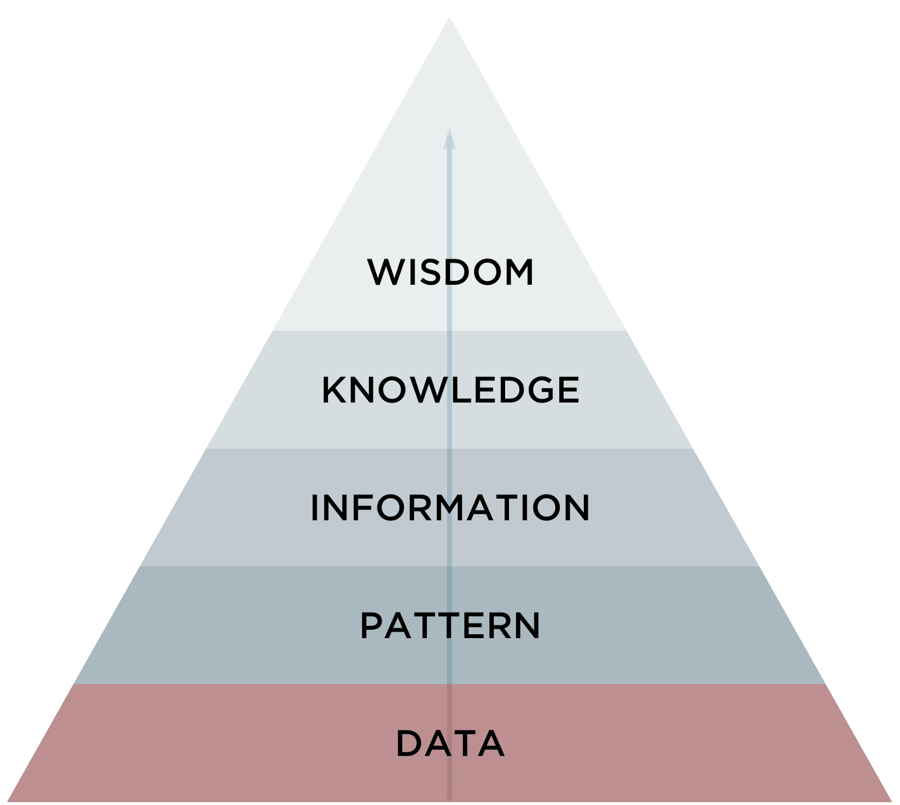
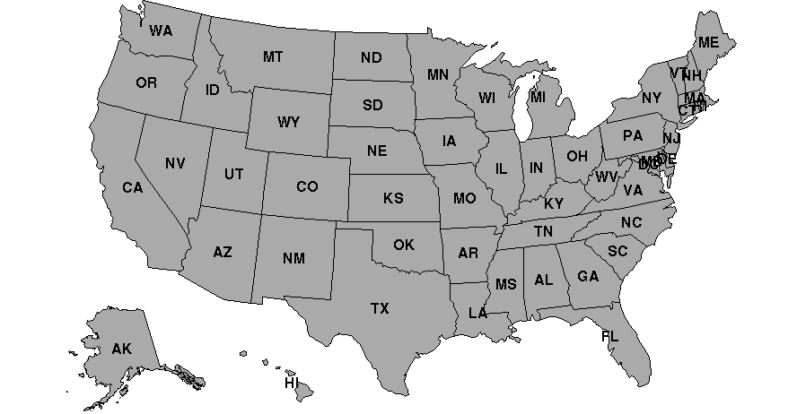
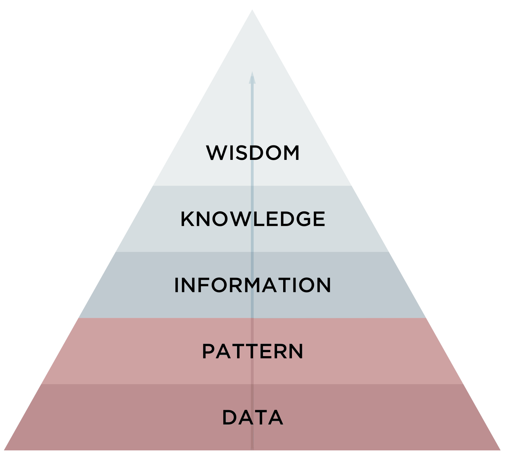
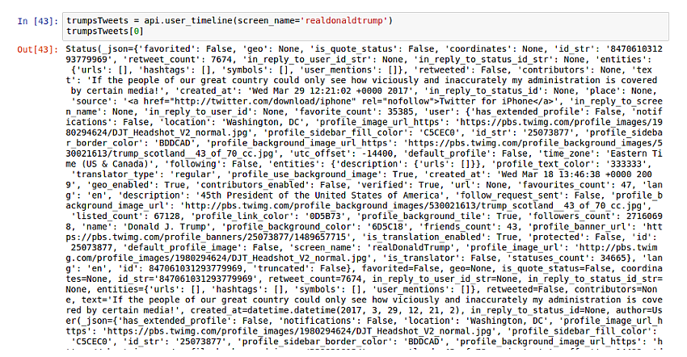
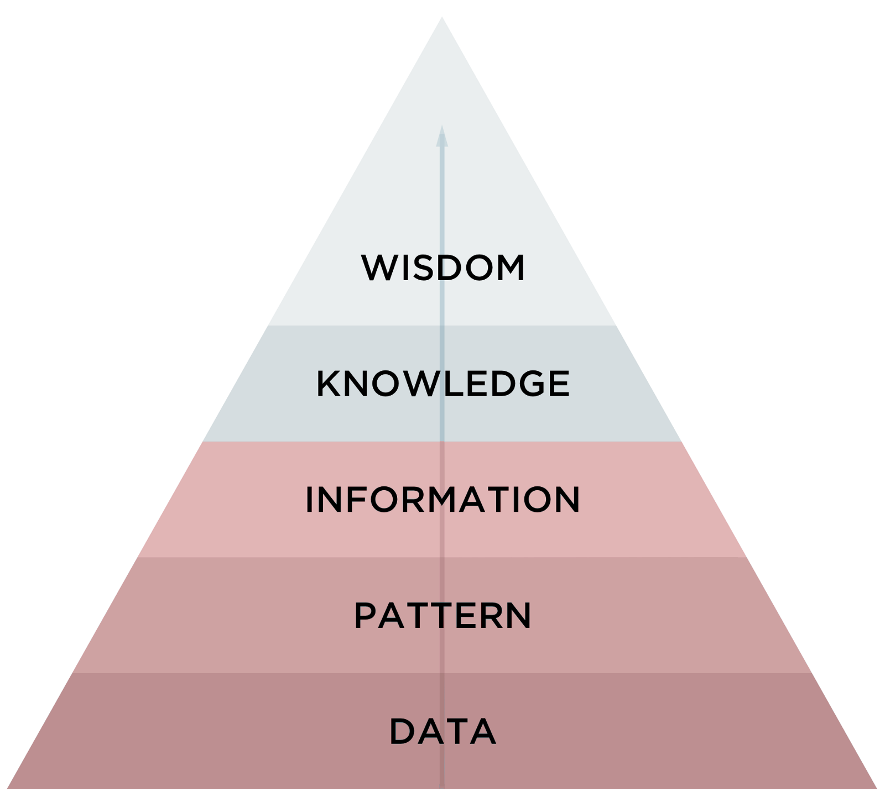
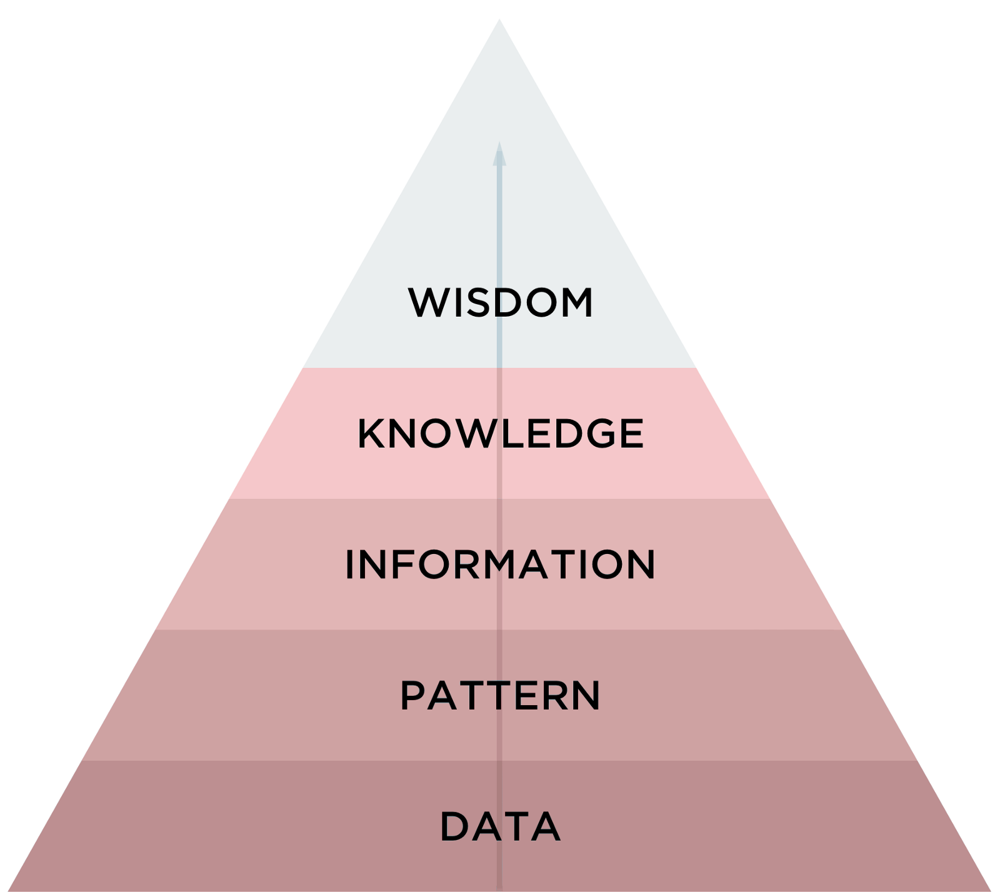

- Introdução
- Dados
- Big Data
- Coleta, Análise e Mineração
- Data Science
- Informação e Gestão da Informação
- Conhecimento
- Relevância para as organizações
Gabriel D'Luca, Vitor Lima
(IF973) Fundamentos de Sistemas de Informação
agosto – 2017
Roteiro
Roteiro

Introdução
- São observações documentadas ou resultados de uma medição
- Não dependem de quem visualiza
- Hoje, quase todas as instituições coletam dados sobre seus processos e usuários
Introdução
- Ao contrário dos dados, é composta por elementos mais palpáveis
Dados brutos- Passam por diversas manipulações
Introdução

Introdução

Introdução
- "A temperatura média de Paris em dezembro é de 5ºC"
- Composto por interpretações puramente subjetivas
- Experiência e Aprendizagem
Dados

Dados
Pode-se entender um dado como um elemento da informação (um conjunto de letras ou dígitos) que, tomado isoladamente, não transmite nenhum conhecimento, ou seja, não contêm nenhum significado intrínseco
Kenneth Laudon, Jane Laudon
Representam eventos que ocorrem nas organizações ou em ambientes físicos antes de eles terem sido organizados em um formato que as pessoas possam entender e utilizar
Dados
- Possuem outras representações (imagens, áudios, etc)

Dados

Dados
- São puramente objetivos
- Podem ser estruturados ou não estruturados
- ***COMPLETAR***
Dados
***APRESENTAR UMA OUTRA DEFINIÇÃO AQUI***
- ***COMPLETAR***
Big Data
Big Data
Conjuntos de dados que são muito grandes e complexos para serem manipulados ou examinados com métodos ou ferramentas padrões
Fatores contribuíntes
- Evolução na infraestrutura de coleta e análise de dados
- Velocidade e Variedade
- Surgimento de novas técnicas (aprendizagem de máquina)
Big Data
Big Data
Segundo a INTEL, até 2003 foram criados cinco exabytes (5×1018) de informação, algo que atualmente é criado em apenas dois dias.
Aplicabilidades
- Direcionar ações de marketing
- Personalizar serviços
- Reduzir taxas de evasão de clientes
Big Data — Case de Sucesso
Coleta, Mineração e Análise

Coleta, Mineração e Análise

Coleta, Mineração e Análise
- ***INCLUIR INFORMAÇÕES SOBRE COLETA AQUI***
Coleta, Mineração e Análise
Coleta, Mineração e Análise
- Quase nunca estão em sua melhor representação
- Pode-se ter menos do que precisa (ou mais!)
- ***INCLUIR INFORMAÇÕES SOBRE COLETA AQUI***
Coleta, Mineração e Análise
Coleta, Mineração e Análise
- Análise é o processo de distinção das partes de um todo, com o objetivo de compreendê-lo melhor
- O objetivo da análise deve estar bem definido para que possa realmente auxiliar na tomada de decisões, exploração de oportunidades ou solução de problemas
- Esse método é largamente utilizado em diversas áreas, principalmente em negócios
Coleta, Mineração e Análise
- Empresas já contratavam times de estatísticos e/ou atuários desde o início do século passado
- Os computadores modernos possibilitaram automatizar o cruzamento de dados, o que, consequentemente, permitiu que análises mais profundas fossem realizadas
- Essa análise de dados cada vez mais se tornava um poderoso meio para gerar informações que poderiam levar empresas a possuir vantagem competitiva
Informação

Previsão do consumo de itens em situações de emergência
- Em 2004, um ciclone tropical estava indo em direção ao Atlântico norte
- Dada a previsão de que o furacão atingiria a Flórida, os executivos do Wal-Mart decidiram testar algumas das suas novas armas para análise de dados (Hays, 2004) para prever quais itens seriam consumidos para reforçar o estoque em suas lojas
Previsão do consumo de itens em situações de emergência

Sede por informação
- Por causa de casos como esse, empresários do mundo todo viram grandes oportunidades e decidiram investir na coleta de informações
- Devido ao constante aumento da quantidade de dado sendo coletada, elas eram capazes de gerar informações cada vez mais confiáveis e completas
Mas afinal, o que é informação?

Informação
Informação é a resultante do processamento, manipulação e organização de dados, de tal forma que represente uma modificação no conhecimento do sistema que a recebe.
Informação
- De acordo com a teoria da comunicação, qualquer forma de interferência na comunicação pode ser considerada uma informação
Informação
- Uma variação importante identifica a informação como algo que pode ser comunicado por uma mensagem do emissor para um receptor capaz de compreender a mensagem
Informação
- No entanto, para melhor uso da informação na tomada de decisão, é importante que a informação seja completa, confiável, relevante, veríficavel, acessível e, uma vez que traz vantagem competitiva, segura
- Além disso, a informação deve cobrir uma área significativa, estar atualizada e disponibilizada para as pessoas corretas
Conhecimento

Relevância para as organizações

Referências
SETZER, V. W. (1999). Dado, Conhecimento, Informação e Competência. Disponível em: www.ime.usp.br/~vwsetzer/datagrama.html.
Acesso em: 20 ago. 2017.
HJORLAND, B. CAPURRO, R. (2007). O conceito de informação. Disponível em: https://www.theguardian.com/news/datablog/2012/
dec/19/big-data-study-digital-universe-global-volume. Acesso em: 20 ago. 2017.
PERRELLI, H. (2017). Sistemas de Informação para Iniciantes: tudo o que você queria saber mas tinha vergonha de perguntar. 1ª ed.